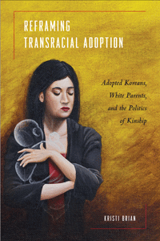

<body bgcolor="#FFFFFF" text="#000000" link="#0000FF" vlink="#CC0000" alink="#CC0000"><center><hr width="350" size="1" align="center" noshade>A provocative critique of transnational, transracial adoption from a critical race and feminist perspective and a vision for reform<hr width="350" size="1" align="center" noshade><p><a href="https://cdcshoppingcart.uchicago.edu/Cart/ChicagoBook.aspx?ISBN=9781439901830&&PRESS=temple" target="_top">Buy this book!</a> | <a href="https://cdcshoppingcart.uchicago.edu/Cart/Cart.aspx?PRESS=temple" target="_top">View Cart</a> | <a href="https://cdcshoppingcart.uchicago.edu/Cart/Cart.aspx?PRESS=temple" target="_top">Check Out</a></p><p></p></center><!--none//--><h1>Reframing Transracial Adoption</h1>
<H2>Adopted Koreans, White Parents, and the Politics of Kinship</H2>
<h3>Kristi Brian</h3>
<P>cloth 1-4399-0183-X $85.50, May 12, <FONT COLOR=#990033>Available</FONT>
<br>paper 1-4399-0184-8 $30.95, May 12, <FONT COLOR=#990033>Available</FONT>
<br>Electronic Book 1-4399-0185-6 $30.95 <FONT COLOR=#990033>Available</FONT>
<BR> 230 pp
6x9
</P><BLOCKQUOTE><I>"Kristi Brian bravely shines a spotlight on the racial inequities that undergird transnational adoptions but are typically whitewashed by assumptions of adoptive parents’ benevolence and colorblindness. </I>Reframing Transracial Adoption<I> proposes a more culturally inclusive, child-centered paradigm focused on the voices of Korean adoptees rather than the personal preferences of white adopters, who sometimes select children on the basis of racialized criteria and then refuse to take their racial identities seriously. A critical contribution to an honest discussion of the role race plays in adoption and, indeed, in all family structures."</I><br>&#151<b>Dorothy Roberts</b>, Kirkland & Ellis Professor, Northwestern University School of Law, and author of <I>Shattered Bonds: The Color of Child Welfare</I></I></BLOCKQUOTE>
<P>Until the late twentieth century, the majority of foreign-born children adopted in the United States came from Korea. In the absorbing book <i>Reframing Transracial Adoption</i>, Kristi Brian investigates the power dynamics at work between the white families, the Korean adoptees, and the unknown birth mothers. Brian conducts interviews with adult adopted Koreans, adoptive parents, and adoption agency facilitators in the United States to explore the conflicting interpretations of race, culture, multiculturalism, and family.
<P>Brian argues for broad changes as she critiques the so-called "colorblind" adoption policy in the United States. Analyzing the process of kinship formation, the racial aspects of these adoptions, and the experience of adoptees, she reveals the stifling impact of dominant nuclear-family ideologies and the crowded intersections of competing racial discourses.
<P>Brian finds a resolution in the efforts of adult adoptees to form coherent identities and launch powerful adoption reform movements.
<BR>&nbsp;<h2>Excerpt</h2><P>Excerpt available at <a href="http://www.temple.edu/tempress">www.temple.edu/tempress</a></p>
<BR>&nbsp;<h2>Reviews</h2>
<p><I>"Kristi Brian’s book is captivating, moving, informative, touching, extensively researched, critical, and intriguing. It is full of sharp analysis and rich accounts, and it opens the reader’s eyes to the dehumanizing process, racist practices, and complexities of transracial adoption. Brian centers the discussion on the role white supremacy plays in the adoption process. White adoptive parents are at times unaware of their racial privilege and racial stereotyping of children. Brian should be praised for demonstrating a dire need for increased race consciousness for both the adoption agencies and potential parents. </I>Reframing Transracial Adoption<I>, dispels the myths of easy assimilation for Korean adoptees into white families and brings to light the real cost when white parents are dismissive of the racism their adopted Korean children endure."</I> <br>&#151<b>Rosalind S. Chou</b>, Assistant Professor of Sociology, Georgia State University
<p><I>"</I>Reframing Transracial Adoption<I> has the potential to prevent adoption disruptions if it is discussed as thoughtfully as it is written. Its truthful accounting of the structures of violence embedded in transracial adoption challenges readers to cultivate a critical consciousness about a massive practice usually believed to be benevolent. Highly recommended to both transracial adoptees and their white adoptive parents."</I> <br>&#151<b>Jane Jeong Trenka</b>, author of <I>The Language of Blood and Fugitive Visions: An Adoptee’s Return to Korea</I>
<p><i>"[C]ompelling.... Brian effectively analyzes the inherently political act of family building.... Brian’s critical race feminist methodology, and her explanation of the matters of adoption and the ways in which adoption matters are useful and often insightful.... There is much to be applauded in a political analysis of a phenomenon such as Korean-American adoption and Kristi Brian’s </i>Reframing Transracial Adoption<i> succeeds admirably in this regard." </i><br>&#151<b><i>Anthropological Quarterly</i></b>
<p><i>"This book is thoroughly researched and brave in asserting specific positions with regard to adoption reform.... Overall, there is much to be learned from Brian's account, and she provides important challenges to current thinking as it is embodied by adoptive parents, adoption facilitators and agencies, and adoption policy discourse." </i><br>&#151<b><i>American Ethnologist</i></b>
<p><i>"Brian demonstrates an exceptional understanding of the problems affecting Korean adoption...her work is noteworthy for its effort to document racism within adoptive families.... </i>Reframing Transracial Adoption<i> is at once a scholarly study and a work of adoption reform activism. Brian highlights structural problems in the transnational adoption industry and shows how adult Korean adoptees are working to change it. In addition, she makes a strong argument against the commonly held idea that transracial adoption is a cure for racism because it creates multiracial families. She instead shows how the adoption industry depends on white privilege and the geopolitical dominance of the United States." </i><br>&#151<b><i> Signs: Journal of Women and Culture in Society</i></b>
<p><i>"Brian exhibits a strong conversant history and literature on race and adoption.... She is particularly good at critiquing transracial adoption by celebrity... she raises the intriguing issue of how adoptees themselves are now changing the processes of adoption.... Brian's book provides an excellent critique of the hidden racism in American adoptions."</i><br>&#151<b> <i>Contemporary Sociology</i></b>
<BR>&nbsp;<h2>Contents</h2><P>
<p>Preface: The Personal and the Political
<br>Acknowledgments
<br>1. Adoption Matters: Beyond Catastrophe and Spectacle
<br>2. Adoption Facilitators and the Marketing of Family Building: “Expert” Systems Meet Spurious Culture
<br>3. Navigating Racism: Avoiding and Confronting “Difference” in Families
<br>4. Navigating Kinship: Searching for Family beyond and within “the Doctrine of Genealogical Unity”
<br>5. Strategic Interruptions versus Possessive Investment: Transnational Adoption in the Era of New Racism
<br>Notes
<br>References
<br>Index
</P><BR>&nbsp;<H2>About the Author(s)</H2>
<P><b>Kristi Brian</b> teaches courses in Women's and Gender Studies and Anthropology and is the Director of Diversity Education and Training at the College of Charleston.</P>
<BR><H2>Subject Categories</H2>
<p><A HREF="/tempress/asian_amer.html" TARGET="_top">Asian American Studies</a>
<BR><A HREF="/tempress/family.html" TARGET="_top">Family Policy</a>
<BR><A HREF="/tempress/race.html" TARGET="_top">Race and Ethnicity</a>
</p>
<BR><h2 class="inpageheading">In the series</H2>
<P><I><a href="http://www.temple.edu/tempress/asam_history.html" onMouseOver="window.status='Click for other books in this series!'; return true;" onMouseOut="window.status=''; return true;" target="_top">Asian American History and Culture</a></i>, edited by K. Scott Wong, Linda Trinh Võ, and Cathy Schlund-Vials.
</p><p>Founded by Sucheng Chan in 1991, the <I>Asian American History and Culture</I>, series has sponsored innovative scholarship that has redefined, expanded, and advanced the field of Asian American studies while strengthening its links to related areas of scholarly inquiry and engaged critique. Like the field from which it emerged, the series remains rooted in the social sciences and humanities, encompassing multiple regions, formations, communities, and identities. Extending the vision of founding editor Sucheng Chan and emeriti editor Michael Omi and David Palumbo-Liu, series editors K. Scott Wong, Linda Trinh Võ, and Cathy Schlund-Vials continue to develop a foundational collection that embodies a range of theoretical and methodological approaches to Asian American studies.</p>
<p align="center"><a href="https://cdcshoppingcart.uchicago.edu/Cart/ChicagoBook.aspx?ISBN=9781439901830&&PRESS=temple" target="_top">Buy this book!</a> | <a href="https://cdcshoppingcart.uchicago.edu/Cart/Cart.aspx?PRESS=temple" target="_top">View Cart</a> | <a href="https://cdcshoppingcart.uchicago.edu/Cart/Cart.aspx?PRESS=temple" target="_top">Check Out</a></p><p><font face="Arial" size="1"><a href="copyright.html" onMouseOver="window.status='Web Copyright Policy';return true;" onMouseOut="window.status=''" title="Web Copyright Policy">&copy;</a> 2015 <a href="http://www.temple.edu" target="new" onMouseOver="window.status='Link to Temple University home page';return true;" onMouseOut="window.status=''" title="Link to Temple University home page">Temple University</a>. All Rights Reserved. http://www.temple.edu/tempress/titles/2068_reg.html</font></p>